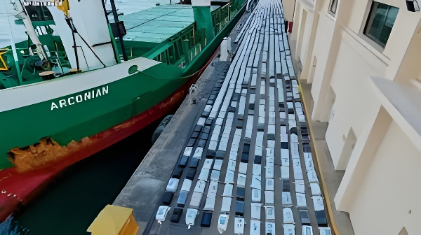

Le 1er mai 2026, la Guardia Civil espagnole intercepte en eaux internationales, au large des Canaries, un cargo battant pavillon comorien transportant 30 tonnes de cocaïne confirmées — un record national absolu, d'une valeur estimée à 812 millions d'euros. Cet « coup historique » porté au narcotrafic mondial illustre la place stratégique qu'occupe l'Espagne comme point d'entrée de la drogue en Europe, et la montée en puissance de ses capacités répressives dans un contexte de coopération internationale renforcée.
Dans la nuit du 1er au 2 mai 2026, des unités de la Guardia Civil interceptent en eaux internationales, au large des Îles Canaries, un cargo d'environ 90 mètres battant pavillon comorien. Le navire avait appareillé le 22 avril de Freetown, capitale de Sierra Leone, en direction de Benghazi, en Libye. La cale était entièrement chargée de ballots de cocaïne — entre 35 000 et 40 000 kilogrammes selon les premières estimations de l'AUGC, le principal syndicat de la Guardia Civil. Le bâtiment est ensuite escorté jusqu'au port de Las Palmas, en Grande Canarie, où il est placé sous scellés judiciaires.
Le 8 mai 2026, l'Audiencia Nacional, la plus haute juridiction pénale espagnole, confirme officiellement le chiffre de 30 tonnes dans une ordonnance judiciaire, précisant que la valeur marchande de la cargaison est estimée à 812 millions d'euros (environ 956 millions de dollars). Les 23 membres d'équipage appréhendés lors de l'interception — 17 ressortissants philippins, 5 Néerlandais et 1 Surinamais — ont été placés en détention provisoire. Le ministre de l'Intérieur, Fernando Grande-Marlaska, déclare à la presse que la saisie est « l'une des plus importantes, non seulement à l'échelle nationale, mais aussi internationale ».
Les enquêteurs estiment que le navire ne devait pas livrer sa cargaison à Benghazi. La destination libyenne, jugée « peu cohérente » au regard du volume concerné, n'était sans doute qu'un leurre : conformément au schéma habituel des grandes opérations de trafic, les bales auraient été transbordées en haute mer sur de plus petites embarcations rapides, chargées d'acheminer la drogue vers les côtes européennes. L'Espagne est depuis plusieurs années identifiée par les spécialistes comme l'une des principales portes d'entrée de la cocaïne en Europe, en raison de ses liens historiques et culturels avec l'Amérique latine — principal bassin de production — et de sa façade atlantique.
L'opération du 1er mai s'inscrit dans une série de saisies majeures menées par les autorités espagnoles au cours des derniers mois. En janvier 2026, la police nationale avait déjà réalisé sa plus grande saisie de cocaïne en mer, avec près de 10 tonnes interceptées sur un cargo en haute mer — une opération présentée à l'époque comme « historique ». En octobre 2025, 6,5 tonnes avaient été saisies au large des Canaries grâce à un renseignement américain. En 2024, 13 tonnes avaient été découvertes dans un conteneur arrivé au port d'Algésiras en provenance de l'Équateur, dissimulées parmi des bananes.
Saisie de 13 tonnes de cocaïne dans le port d'Algésiras, dans un conteneur en provenance d'Équateur — record national à l'époque.
Saisie de 6,5 tonnes au large des Canaries après un renseignement transmis par les autorités américaines (DEA).
Plus grande saisie de cocaïne en haute mer de la Police nationale espagnole : près de 10 tonnes, avec coopération franco-portugaise et brésilienne.
Interception du cargo comorien au large des Canaries : entre 35 et 40 tonnes initialement annoncées, 30 tonnes officiellement confirmées.
L'Audiencia Nacional confirme 30 tonnes, valeur de 812 M€, et place les 23 membres d'équipage en détention provisoire.
La position géographique de l'Espagne en fait structurellement un nœud du trafic de cocaïne à destination de l'Europe. La péninsule ibérique constitue la première terre européenne après l'Atlantique, et les Îles Canaries — situées à moins de 100 km des côtes africaines — font office de relais naturel sur la route maritime qui relie l'Amérique du Sud à l'Europe occidentale. La proximité du Maroc, premier producteur mondial de cannabis, renforce encore ce rôle de plaque tournante. Les liens culturels et linguistiques avec l'Amérique latine facilitent par ailleurs l'implantation de réseaux criminels d'origine colombienne, mexicaine ou vénézuélienne sur le sol espagnol.
Les saisies successives illustrent la montée en puissance des unités spécialisées de la Guardia Civil et de la Police nationale, mais aussi le rôle croissant de la coopération internationale. L'opération de janvier 2026 avait ainsi mobilisé les autorités françaises, portugaises et brésiliennes, en plus de la DEA américaine. L'interception du 1er mai a été conduite dans le cadre d'une instruction supervisée par l'Audiencia Nacional — juridiction compétente pour les infractions graves à caractère transnational.
| Opération | Quantité | Localisation |
|---|---|---|
| Mai 2026 (cargo comorien) | 30 t confirmées | Large des Canaries (haute mer) |
| Janvier 2026 | ~10 t | Haute mer (Atlantique) |
| Octobre 2025 | 6,5 t | Large des Canaries |
| 2024 (port d'Algésiras) | 13 t | Port d'Algésiras (Andalousie) |
L'affaire est placée sous secret de l'instruction par décision de justice, ce qui explique la discrétion officielle de la Guardia Civil dans les premiers jours suivant l'interception. Les informations ont été rendues publiques par l'AUGC — syndicat majoritaire du corps — avant d'être partiellement confirmées par le ministre Grande-Marlaska. L'ordonnance judiciaire de l'Audiencia Nacional du 8 mai lève partiellement ce voile en précisant le poids officiel et la valeur estimée, ainsi que la mise en détention provisoire des 23 membres d'équipage.
La composition de l'équipage — majoritairement philippin, avec des ressortissants néerlandais et surinamais — reflète le caractère profondément transnational des réseaux concernés. L'implication de citoyens néerlandais, dont le pays abrite l'un des plus grands ports de transit de cocaïne en Europe (Rotterdam-Anvers), est particulièrement notable. Le Sierra Leone, point de départ du navire, est par ailleurs régulièrement mentionné dans les rapports des agences antidrogue comme hub de transbordement de la cocaïne latino-américaine à destination de l'Europe.
« C'est l'une des plus importantes saisies, non seulement à l'échelle nationale, mais aussi internationale. »
— Fernando Grande-Marlaska, ministre espagnol de l'Intérieur, 4 mai 2026La saisie du 1er mai 2026 dépasse le simple fait divers policier. Elle révèle la capacité croissante de l'appareil judiciaire et sécuritaire espagnol à frapper les grands réseaux de narcotrafic à une échelle sans précédent, et confirme le rôle central que jouent les Îles Canaries et la façade atlantique dans l'économie criminelle mondiale. Mais elle met aussi en lumière les limites structurelles de l'action répressive : si les saisies se multiplient et grossissent, c'est aussi parce que les volumes de cocaïne acheminés vers l'Europe atteignent des niveaux records. L'ONUDC (Office des Nations unies contre la drogue et le crime) estimait en 2024 que la production mondiale de cocaïne avait triplé en dix ans. Face à des flux aussi massifs, les coups portés au narcotrafic, aussi spectaculaires soient-ils, ne sauraient suffire sans une approche politique globale — coopération judiciaire internationale, lutte contre le blanchiment, et politiques de prévention — dont l'Espagne est désormais l'un des acteurs incontournables à l'échelle européenne.
El 1 de mayo de 2026, la Guardia Civil española interceptó en aguas internacionales, frente a las Islas Canarias, un carguero de pabellón comorense que transportaba 30 toneladas de cocaína confirmadas — un récord nacional absoluto, con un valor estimado de 812 millones de euros. Este «golpe histórico» al narcotráfico mundial ilustra el papel estratégico de España como puerta de entrada de la droga en Europa, y el fortalecimiento de sus capacidades represivas en un contexto de creciente cooperación internacional.
En la noche del 1 al 2 de mayo de 2026, unidades de la Guardia Civil interceptaron en aguas internacionales, frente a las Islas Canarias, un carguero de unos 90 metros de eslora abanderado en Comoros. El buque había zarpado el 22 de abril de Freetown, capital de Sierra Leona, con destino declarado a Bengasi, en Libia. La bodega estaba completamente cargada con fardos de cocaína — entre 35.000 y 40.000 kilogramos según las primeras estimaciones de la AUGC, el principal sindicato de la Guardia Civil. El barco fue escoltado hasta el puerto de Las Palmas de Gran Canaria, donde quedó bajo custodia judicial.
El 8 de mayo de 2026, la Audiencia Nacional confirmó oficialmente la cifra de 30 toneladas en un auto judicial, precisando que el valor de mercado del cargamento se estima en 812 millones de euros (aproximadamente 956 millones de dólares). Los 23 tripulantes detenidos —17 ciudadanos filipinos, 5 neerlandeses y 1 surinamés— fueron puestos en prisión provisional. El ministro del Interior, Fernando Grande-Marlaska, declaró ante la prensa que la incautación era «una de las más importantes, no solo a escala nacional, sino también internacional».
Los investigadores estiman que el buque no tenía previsto descargar la mercancía en Bengasi. El destino libio, considerado «poco coherente» dado el volumen en cuestión, era probablemente una tapadera: conforme al patrón habitual de las grandes operaciones de tráfico, los fardos habrían sido transbordados en alta mar a embarcaciones más pequeñas y rápidas, encargadas de introducir la droga en las costas europeas. España lleva años siendo identificada por los especialistas como una de las principales puertas de entrada de la cocaína en Europa, por sus lazos históricos y culturales con América Latina —principal cuenca de producción— y por su fachada atlántica.
La operación del 1 de mayo se inscribe en una serie de grandes incautaciones llevadas a cabo por las autoridades españolas en los últimos meses. En enero de 2026, la Policía Nacional ya había realizado su mayor intervención de cocaína en alta mar, con cerca de 10 toneladas interceptadas en un carguero —una operación presentada en su momento como «histórica». En octubre de 2025, 6,5 toneladas habían sido incautadas frente a las Canarias gracias a una información de los servicios americanos. En 2024, 13 toneladas habían sido descubiertas en un contenedor llegado al puerto de Algeciras desde Ecuador, camufladas entre plátanos.
Incautación de 13 toneladas de cocaína en el puerto de Algeciras, en un contenedor procedente de Ecuador — récord nacional en aquel momento.
Incautación de 6,5 toneladas frente a las Canarias tras una información transmitida por las autoridades estadounidenses (DEA).
Mayor incautación de cocaína en alta mar de la Policía Nacional española: cerca de 10 toneladas, con cooperación franco-portuguesa y brasileña.
Interceptación del carguero comorense frente a las Canarias: entre 35 y 40 toneladas anunciadas inicialmente, 30 confirmadas oficialmente.
La Audiencia Nacional confirma las 30 toneladas, valor de 812 M€, y decreta prisión provisional para los 23 tripulantes.
La posición geográfica de España la convierte estructuralmente en un nudo del tráfico de cocaína con destino a Europa. La península ibérica es la primera tierra europea tras el Atlántico, y las Islas Canarias —situadas a menos de 100 km de las costas africanas— actúan como relevo natural en la ruta marítima que conecta América del Sur con Europa occidental. La proximidad de Marruecos, primer productor mundial de cannabis, refuerza aún más este papel de plataforma giratoria. Los vínculos culturales y lingüísticos con América Latina facilitan además el arraigo de redes criminales de origen colombiano, mexicano o venezolano en suelo español.
Las sucesivas incautaciones ilustran el fortalecimiento de las unidades especializadas de la Guardia Civil y de la Policía Nacional, pero también el papel creciente de la cooperación internacional. La operación de enero de 2026 movilizó a las autoridades francesas, portuguesas y brasileñas, además de la DEA estadounidense. La interceptación del 1 de mayo fue conducida en el marco de una instrucción supervisada por la Audiencia Nacional —jurisdicción competente para infracciones graves de carácter transnacional.
| Operación | Cantidad | Localización |
|---|---|---|
| Mayo 2026 (carguero comorense) | 30 t confirmadas | Frente a las Canarias (alta mar) |
| Enero 2026 | ~10 t | Alta mar (Atlántico) |
| Octubre 2025 | 6,5 t | Frente a las Canarias |
| 2024 (puerto de Algeciras) | 13 t | Puerto de Algeciras (Andalucía) |
El asunto fue sometido al secreto de sumario por decisión judicial, lo que explica la discreción oficial de la Guardia Civil en los primeros días tras la interceptación. Las informaciones fueron divulgadas por la AUGC —sindicato mayoritario del cuerpo— antes de ser parcialmente confirmadas por el ministro Grande-Marlaska. El auto de la Audiencia Nacional del 8 de mayo levanta parcialmente ese velo al precisar el peso oficial y el valor estimado, así como la prisión provisional de los 23 tripulantes.
La composición de la tripulación —mayoritariamente filipina, con ciudadanos neerlandeses y surinameses— refleja el carácter profundamente transnacional de las redes implicadas. La participación de ciudadanos neerlandeses, cuyo país alberga uno de los mayores puertos de tránsito de cocaína en Europa (Rotterdam-Amberes), resulta especialmente significativa. Sierra Leona, punto de partida del buque, es mencionada con regularidad en los informes de las agencias antidroga como hub de transbordo de la cocaína latinoamericana con destino a Europa.
« Es una de las más importantes, no solo a escala nacional, sino también internacional. »
— Fernando Grande-Marlaska, ministro español del Interior, 4 de mayo de 2026La incautación del 1 de mayo de 2026 trasciende el simple suceso policial. Revela la capacidad creciente del aparato judicial y de seguridad español para golpear a las grandes redes de narcotráfico a una escala sin precedentes, y confirma el papel central que desempeñan las Islas Canarias y la fachada atlántica en la economía criminal mundial. Pero también pone de relieve los límites estructurales de la acción represiva: si las incautaciones se multiplican y crecen en volumen, es también porque las cantidades de cocaína enviadas hacia Europa alcanzan niveles récord. La UNODC estimaba en 2024 que la producción mundial de cocaína se había triplicado en diez años. Ante flujos tan masivos, los golpes asestados al narcotráfico, por espectaculares que sean, no bastan sin un enfoque político global —cooperación judicial internacional, lucha contra el blanqueo y políticas de prevención— del que España es ya uno de los actores imprescindibles a escala europea.